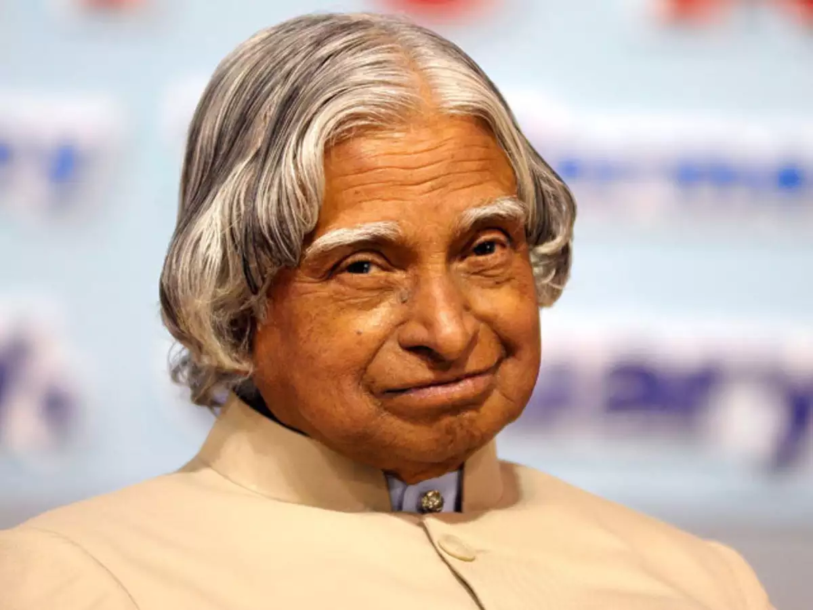

Dr. A.P.J Abdul Kalam
The Missile Man of India

Dr. A.P.J Abdul kalam
Here's a timeline of Dr. A.P.J Abdul Kalam's life:
- 1931 - Born in Rameswaram, Tamil Nadu, India
- 1954 - Graduated from the Saint Joseph's College, Tiruchirappalli
- 1960 - Joined the Aeronautical Development Establishment of the Defence Research and Development Organisation (DRDO).
- 1969 - Transferred to the Indian Space Research Organisation (ISRO)
- 1970 - Directed Project Devil and Project Valiant
- 1982-1983 - Became the chief executive of Integrated Guided Missile Development Program (IGMDP)
- 1990 - Awarded the Padma Vibhushan.
- 1992 - Appointed the Chief Scientific Adviser to the Prime Minister and the Secretary of the Defence Research and Development Organisation
- 1997 - Awarded the Bharat Ratna.
- 2002 - Became the 11th President of India
- 2007 - Stepped down from the presidency of India
- 2012 - Launched a programme for the youth of India called the "What Can I Give Movement"
- 2015 - Died of a cardiac arrest on 27 July.
Dream is not that which you see while sleeping it is something that does not let you sleep
-- Dr. A.P.J Abdul Kalam